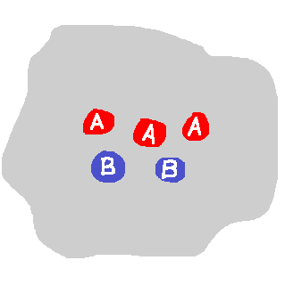
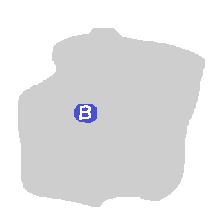
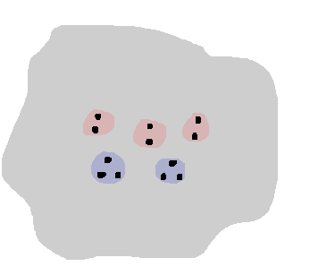
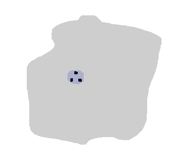
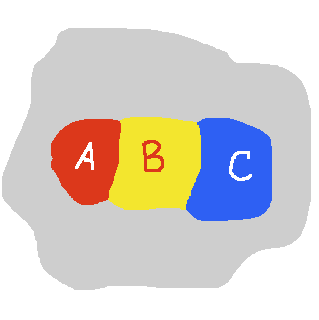
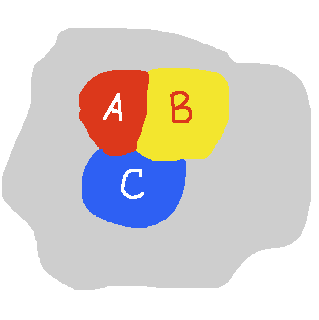

|  |  |
| $ Foo = \lambda (A, B) . A + A + A + B + B $ | $ Foo = \lambda (A, B) . B $ |
|  |  |
| $2 + 2 + 2 + 3 + 3 $ | $ 3 $ |
data Foo (A B : Set) : Set where
injA1 injA2 injA3 : A → Foo A B
injB1 injB2 : B → Foo A B
but beyond that we could imagine adding equations between elements, perhaps a different type
data Bar (A B : Set) : Set where
injA1 injA2 injA3 : A → Bar A B
injB1 injB2 : B → Bar A B
path1 : (a : A) → injA1 a ≡ injA2 a
path2 : (a : A) (b : B) → injA3 a ≡ injB2 b
and we might visualize this as
data Line (A B C : Set) : Set where
injA : A → Line A B C
injB : B → Line A B C
injC : C → Line A B C
pathAB : (a : A) (b : B) → injA a ≡ injB b
pathBC : (b : B) (c : C) → injB b ≡ injC c
|
data Tri (A B C : Set) : Set where
injA : A → Tri A B C
injB : B → Tri A B C
injC : C → Tri A B C
pathAB : (a : A) (b : B) → injA a ≡ injB b
pathBC : (b : B) (c : C) → injB b ≡ injC c
pathAC : (a : A) (c : C) → injA a ≡ injC c
higher-path : (a : A) (b : B) (c : C) →
pathAB a b • pathBC b c ≡ pathAC a c
|
|  |  |
A map with countries indexed by $I$ is a functor \[ \mu : (I \to \rset) \to \rset \] such that $\mu(\lambda j . i \equiv j)$ is a contractible type for every $i : I$.The idea is that the $I$-indexed set of type $(I \to \rset)$ generalizes our ability to "turn on" and "turn off" the presence of any particular country, and "read off" how many connected components there are (actually: read off the homotopy equivalence class of just those countries) in the resulting sub-map. For example, our map might be a functor \[\mu : (\{A,B,\ldots, M,N,O\} \to \rset) \to \rset \] depicted by
A coloring of an $I$-country map $\mu$ with colors from $C$ is a map $k : I \to C$ such that the evident induced function \[ I \to \sum_{c: C} \mu(\lambda j . c \equiv k(j))\] is an equivalence.We can see in the non-example of a coloring
A map $\mu$ is planar iff $\mu(\lambda \underline{\ }.1)$ is equivalent to the type $S^2$.What's happening here is I'm trying to express the idea of erasing country labels, and recovering the underlying space the map is taking place on by setting all the countries' "multiplicity" to 1 — that is, by passing the function $\lambda \underline{\ }.1$ to the map $\mu$. Now for sure a planar map should have this property, but I think it's insufficient — I think you could layer countries "on top of" other countries, leading to more adjacencies than a planar map should allow, while still retaining the property that the "erased" map still has the homotopy type of $S^2$. However! I think doing this would require a higher inductive type with clauses that postulate the existence of paths-of-paths-of-paths to adequately "glue together" these extra illegal countries made up only of airspace. And this seems like an intrinsically "3-dimensional" thing to do. So maybe we can forbid it?
Conjecture Template: Suppose $\mu$ is a sufficiently well-behaved functor of type $(I \to \rset) \to \rset$, and $I$ is a finite mere set. "Well-behaved" includes at least thatThen there exists a coloring $I \to 4$ of $\mu$.
- $\mu$ is a map
- $\mu$ is built up inductively only from injections, paths between injections, and paths-between-paths-between-injections, in some suitable sense.
- $\mu(\lambda \underline{\ }.1) \cong S^2$